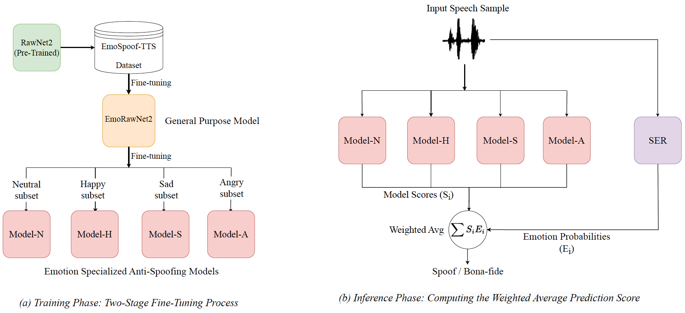

Model Architecture of Proposed Method

Figure: Proposed Gated Ensemble Method (GEM)
Details of EmoSpoof-TTS Dataset
We introduce and release EmoSpoof-TTS, a corpus of emotionally expressive synthetic speech generated using recent text-to-speech models, to facilitate research on the impact of emotion on anti-spoofing models. It contains a total of 36,000 synthesized speech samples from four emotions (Happiness, Anger, Sadness, and Neutral state), 10 (5 male, 5 female) speakers, and 3 TTS models (StyleTTS2 [1], F5-TTS [2], CosyVoice [3]). The bona-fide samples are from Emotional Speech Database (ESD) [4].Speech Samples
| Happy | Angry | Sad | Neutral | |
|---|---|---|---|---|
| Speaker: 0012 | ||||
| Bona-fide | ||||
| StyleTTS2 | ||||
| CosyVoice | ||||
| F5-TTS | ||||
| Speaker: 0012 | ||||
| Bona-fide | ||||
| StyleTTS2 | ||||
| CosyVoice | ||||
| F5-TTS | ||||
| Speaker: 0018 | ||||
| Bona-fide | ||||
| StyleTTS2 | ||||
| CosyVoice | ||||
| F5-TTS | ||||
References
- Li, Yinghao Aaron, et al. "StyleTTS 2: Towards human-level text-to-speech through style diffusion and adversarial training with large speech language models." Advances in Neural Information Processing Systems 36 (2023): 19594-19621.
- Chen, Yushen, et al. "F5-TTS: A Fairytaler that Fakes Fluent and Faithful Speech with Flow Matching." arXiv preprint arXiv:2410.06885 (2024).
- Du, Zhihao, et al. "CosyVoice: A Scalable Multilingual Zero-Shot Text-to-Speech Synthesizer Based on Supervised Semantic Tokens." arXiv preprint arXiv:2407.05407 (2024).
- Zhou, Kun, et al. "Seen and Unseen Emotional Style Transfer for Voice Conversion with a New Emotional Speech Dataset." ICASSP 2021 - IEEE International Conference on Acoustics, Speech, and Signal Processing (ICASSP). IEEE, 2021.